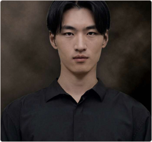
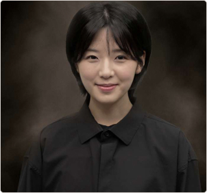

 박정호 난릉왕 고장공 전장의 신이라 불리우는 난릉왕. 어린 시절, 약한 모습 때문에 형제들에게 괴롭힘을 당한다. 강해지길 원했지만, 난세의 영웅이라 칭송받는 지금도 원했던 평안을 찾지 못하고 불안해한다.
 주현정 소년 고장공(난릉왕) 훗날 난릉왕이 되는 고장공의 어린시절. 어머니를 닮아 고운 외모와 유약한 성정 탓에 형제들에게 매일 괴롭힘을 당하다 어머니를 여읜다. 강해지기 위해 샤먼이 건넨 가면을 받아든다.